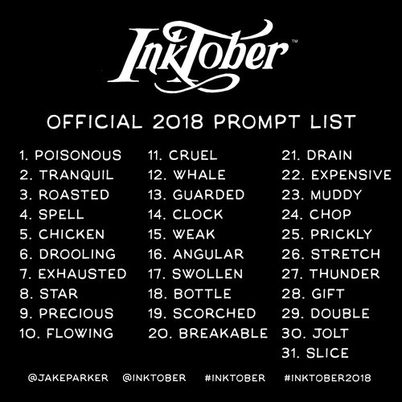

Wheeler Open House

DIB Lab Challenge: Inktober
Every October, artists all over the world take on the Inktober drawing challenge by doing one ink drawing a day the entire month. Every day there is a different word to get the ideas flowing! The official prompt list is below:
This year, the DIB Lab will be hosting Inktober! You can come by the DIB Lab anytime to use our awesome new ink pens to make your own drawings. If you participate in Inktober you will get a DIB Lab Inktober Challenge button and (if you want) we will post your drawing on the DIB Lab windows.
DIB Lab Challenge: DIB Lab Logo Contest
I am so excited to announce our first ever DIB Lab Challenge! A DIB Lab Challenge can be anything. It could be something that you can do every day for a month, a contest, or a way to practice a new skill but it will definitely be a challenge, whatever it is! There may not be a DIB Lab Challenge every month but they will be awesome when we have them!
This DIB Lab Challenge is to create a logo for the DIB Lab! The DIB Lab is an amazing space where we make lots of cool things and it would be super neat to have a logo that we can put all over the place!
Here are the guidelines for the challenge:
- You may make the logo using any method that you would like - you can draw it by hand, design it in Photoshop, or any other way you can think of! If your are not sure, just stop by the DIB Lab or send an email to ask if it will work!
- The logo must be something we can print on paper - no sculptures for this challenge!
- You may only submit one logo design per person
- The logo must be your own original design
- You must turn your logo design in by Monday, Oct. 1st either by submitting it through this Google Form or bringing it to the DIB Lab and handing it to me directly
The Prize:
- The winner of this contest will be chosen by a group of faculty members and all submissions will be anonymous during judging.
- 1 design will be chosen as the official DIB Lab logo, used throughout the lab, and put on every DIB Lab Challenge button
- 8 designs will be chosen to be put on the DIB Lab Project of the Month button for one month
- Every person who participates will receive a DIB Lab Challenge button. There will be a different button for every challenge and you can collect them all!
- Feel free to stop by the DIB Lab any time to use the computers which have the full Adobe suite of software on them, for lessons in how to use programs like designer.gravit.io, to talk about the basics of design, or just as a space to design your logo!
To learn more about logos and how to make good ones, you can check out this guide, this article, or do some research for yourself!
May Projects: Custom T-Shirts and Special Projects Galore!
Arm Body: The WOW Robotics Robotic Arm
Lower School students enrolled in the WOW Robotics program made the incredible Arm Body Robot this spring and they are proud to show off their hard work!
Engineering class catapults their way to success!
For this Upper School Intro Engineering class project, students were told that Amazon wants to make deliveries more efficient by launching packages straight from the truck to peoples' porches. Students were asked to design a device that could hit a 5'x5' "porch" which is drawn in chalk on the ground. They could choose between a number of box sizes and weights for their tests but the goal was to launch the most variety of box sizes and weights as accurately and efficiently as possible.
They all did a wonderful job!
Wheeler Robotics at the Robot Block Party
The Robots are Here! See them April 7 at a Free Event in Providence.
#roboweek #rirobotblockparty @brownhcri @robotblockparty #fll #robots #PVD
You can also check out the awesome interview that these boys did for the Brown Daily Herald at the Block Party!
February Projects: Custom Chocolates and Artistic Robots
January Projects: Robots, Bridges, and Snowflakes
Join the Girls Who Code Club!

No experience necessary! Come learn something new with a really fun group of girls!Meetings are held every Tuesday from 3:15-4:15pm.
Congratulations to the FTC Team!

The FIRST Tech Competition team will be representing Wheeler at the Rhode Island State Championships.
Congratulations to the FLL Team!

FLL did a great job representing Wheeler at the FIRST LEGO League Rhode Island State Championships where they demonstrated their unique, portable water purification system.
December Projects: Holograms, LEGO Robotics, and Hour of Code
November Projects: Stickers, Buttons, and Light-up Lighthouses
October Project of the Month: Button Making
Project of the Month:Buton Making!
DIB Lab Challenge: Inktober
Calendar
You are welcome in the lab anytime! Check the calendar to see when classes are meeting or events are happening!